01
参考图逆向
如何从参考图反推 Prompt
开场
开场
定位：这不是一份单纯的提示词合集，而是一套的 AI 生图工作流。
核心方法是：先拆解参考，再结构化描述，持续对比迭代，最后沉淀为可复用的 Agent / Skill。
演讲大纲
本次分享的 6 个核心步骤
第一章
第一章
先找到类似目标风格、构图或材质的参考图。
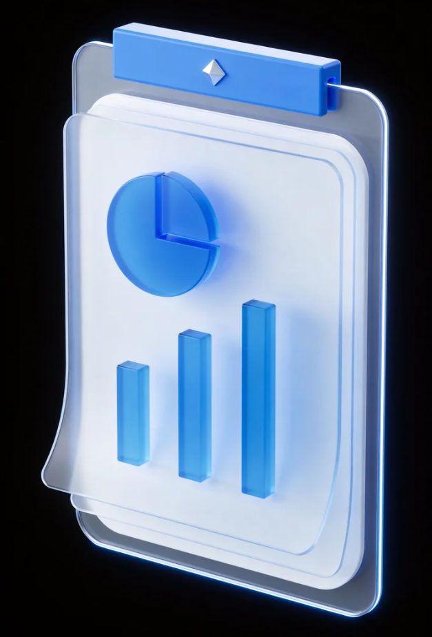
第一章
使用“AI 图像分析师”提示词模板，让模型先拆图，再反推出可执行的生图指令。
你是一位专业的图像分析师和提示词工程师。
#任务
你的任务是分析我上传的这张参考图片，并为我生成一段结构化的图片生成提示词，目标是让即梦能够最大程度上复现原图的风格、内容和构图。
#分析维度，请按照以下结构和要求输出分析结果:
1.核心主体:描述图片中最主要的人物、物体或焦点，包括其外观、姿态等细节。
2.场景环境:描述图片所处的环境背景。具体是什么样的场景?背景中有什么关键元素?
3.构图视角:描述画面的构图方式、摄影机位和视角(如特写、鸟瞰、仰视、2.5D等)。
4.光照氛围: 描述整体的光线效果(如自然光、霓虹灯)、光线方向、质感，以及画面的整体氛围(如科技感)。
5.风格:描述图片的风格。是照片级写实、3D渲染，还是其他风格?
6.色调与色彩搭配 : 描述图片的主色调和色彩搭配。颜色是鲜艳饱和还是柔和复古?整体色调是偏暖还是偏冷?
7.文字与图形:识别画面中包含的主体文字或图形。记录其内容和精准位置。
8.细节与质感 : 提及画面中值得注意的背景、装饰和材质细节。
#最终任务
请将以上所有分析结果，整合成一段可以直接使用的、完整的、高质量的中文提示词，600 字以内。以 markdown 代码框格式输出。
#注意：
不要遗漏任何关键信息，关键词用逗号分隔，并在末尾附上推荐的图像比例参数。第一章
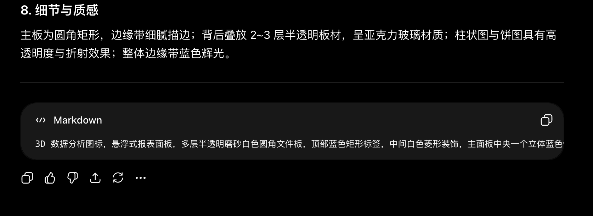
第一章
将反推提示词粘贴到即梦或其他生图工具中，先生成第一版结果。
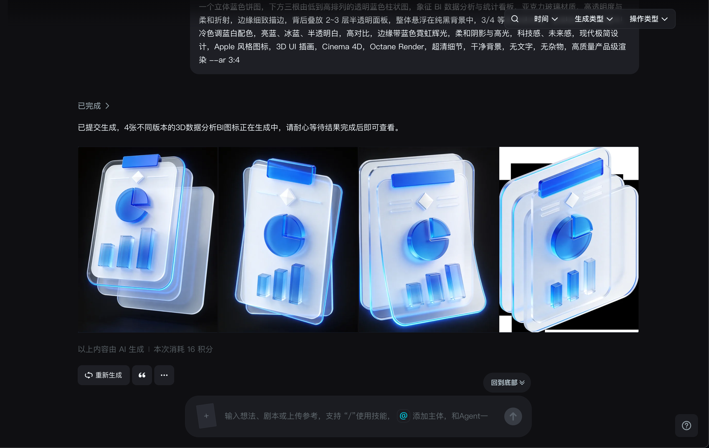
第一章
继续上传生成图，使用优化提示词：
经过测试，我把你反推出来的这套提示词，应用到即梦里面生成的效果较差，为了能够 100% 复刻出参考图。
我将为你上传根据反推提示词生成后的图片，请你将此图与参考图做一个详细的对比，找到两张图之间的差距并点明具体的问题一一罗列，以 markdown 代码框格式输出最终输出优化的提示词。GPT5.5迭代的提示词
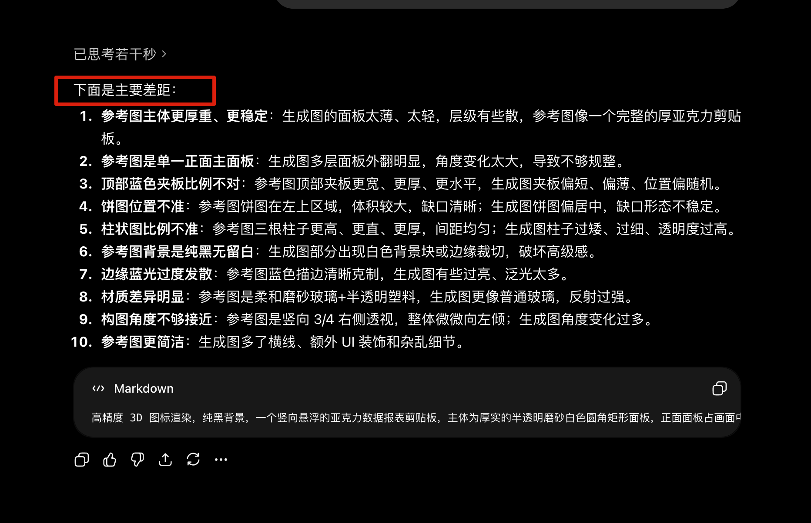
第一章
完成 1 次Loop 后，结果已经可以进入可用区间。
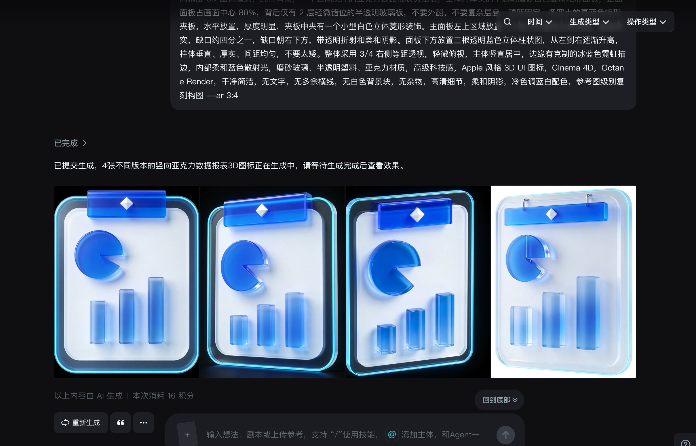
第二章
核心公式：每次描述图片时，至少覆盖以下 9 个维度。
核心主体
场景设定
构图视角
光照氛围
风格
色彩色调
文字与图形
细节与材质
图片比例
使用方式：把结构化公式和模糊创意合并，让模型补齐缺失细节。
第二章
我要B端科技感插画图标，我会先填写部分内容，请你根据我提供的内容，按照公式智能补充完整提示词，不同分类换行输出，整体不超过600字，输出时只保留文字，不要使用除了冒号、顿号、逗号、双引号以外的特殊字符。
下面是公式：
"""
1.核心主体
2.场景设定
3.构图视角
4.光照
5.风格
6.色彩色调
7.文字与图形
8.细节材质与渲染器
9.图片比例
"""
我提供的部分内容：
"""
一张高清B端科技感插画图标，画面主体是一台平板显示器，显示器右侧边框宽有一个按钮，右下角叠加一个半透明玻璃质感文件夹图标，象征设备安装包图标"""
最终任务： 请将以上所有分析结果，整合成一段可以可以直接使用的、完整的、高质量的中文提示词,以 markdown 代码框格式输出，不要遗漏任何关键的信息，关键词用逗号分隔，并在末尾附上推荐的图像比例参数。第二章
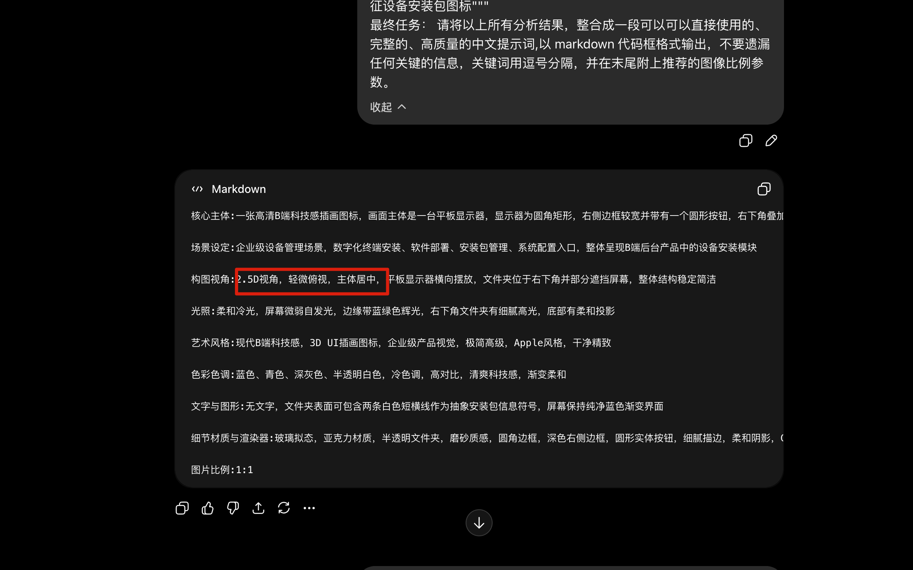
第二章
即梦效果：适合灵感发散与快速试方向
gpt-image2.0效果不错
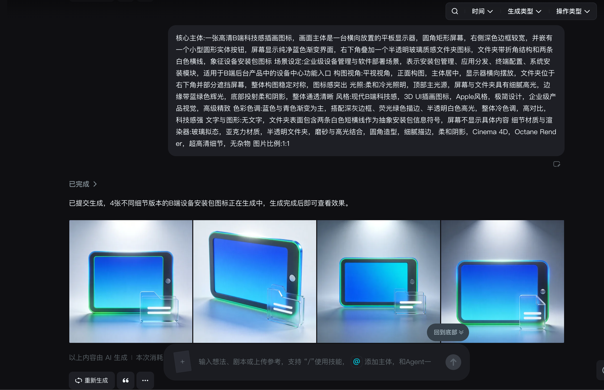
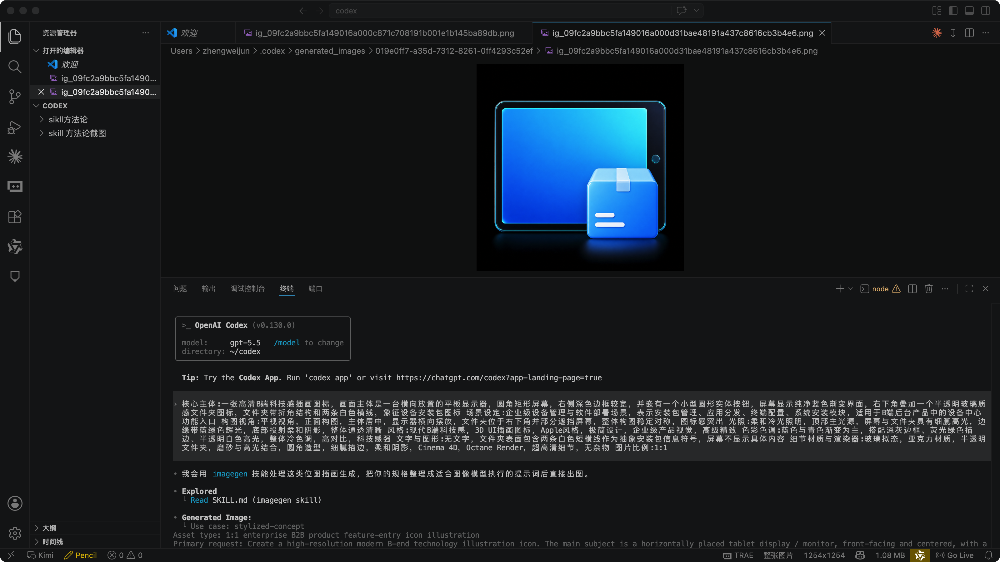
第三章
第三章
当目标是一次生成多张同风格图标时，可以使用“一系列”“组图”“生成几张图”等表达，明确触发组图逻辑。
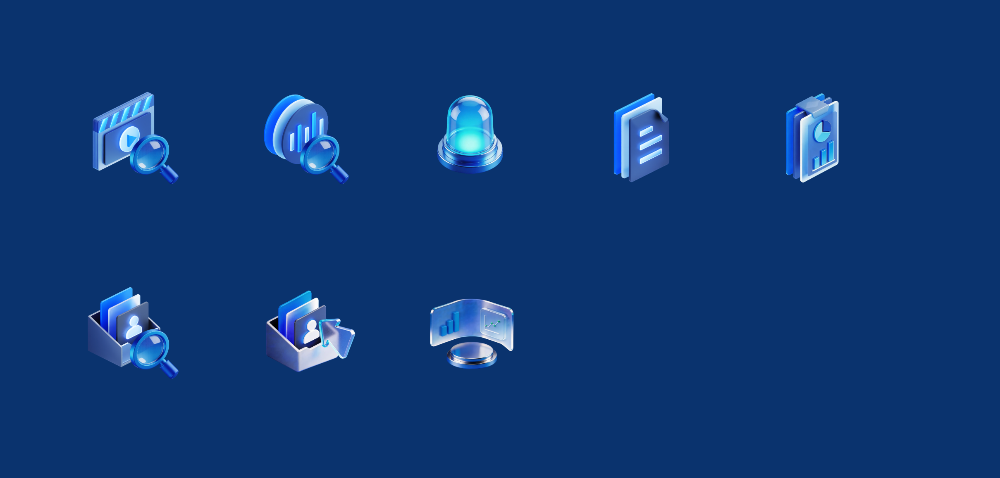
第三章
› 参考画面风格，生成4张分别关于服务器、显示器、档案盒、盾牌的组图第一次生成：先验证整体方向
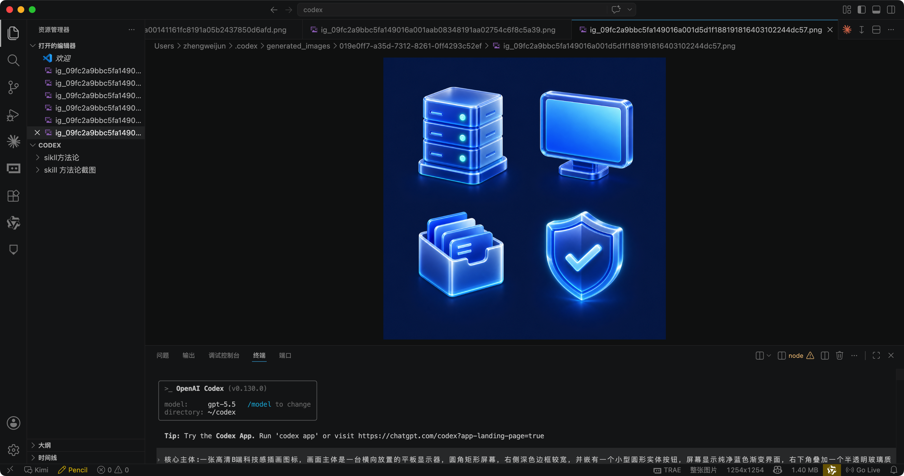
第三章
如果生成图与参考图存在差距，进入对比迭代：
请你将生成图与上文的参考图做一个详细的对比，找到两张图之间的差距并点明具体的问题一一罗列，并重新生成，保证完整的风格、质感、光影等完全一致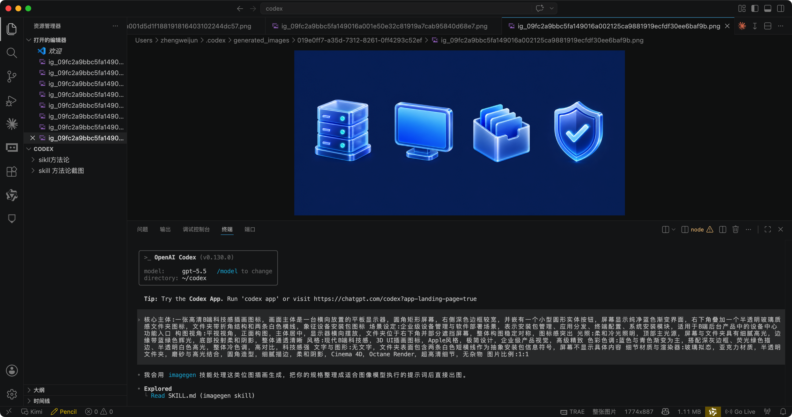
第三章
结果依旧偏差，重新比对分析，特别是光源和材质，重新生成，保证和参考图完全一致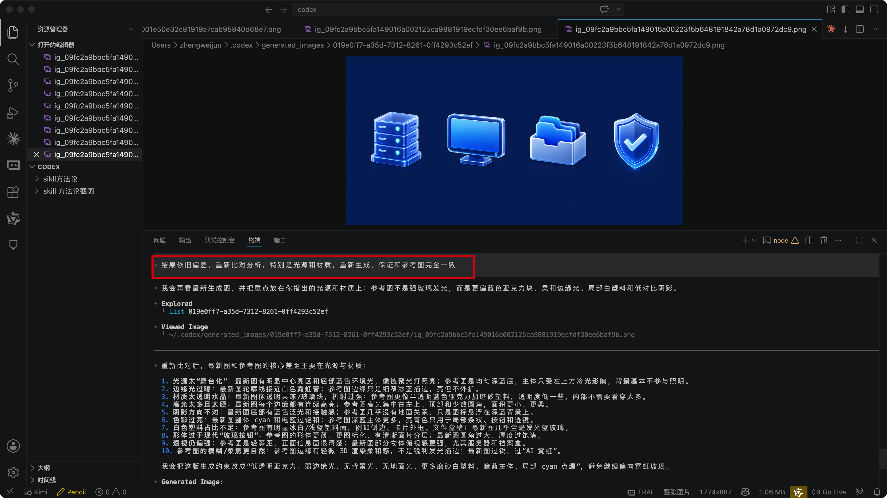
第三章
光效和质感还是有偏差，严格比对分析，修正结果，继续生成，保证完全一致输入图像作为参考，可以显著降低试错成本。
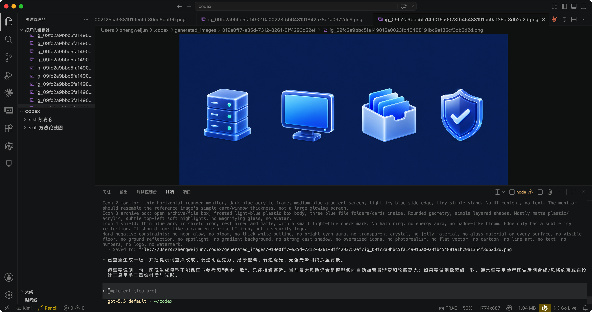
第四章
第四章
火山引擎的提示词工具https://promptpilot.volcengine.com/home
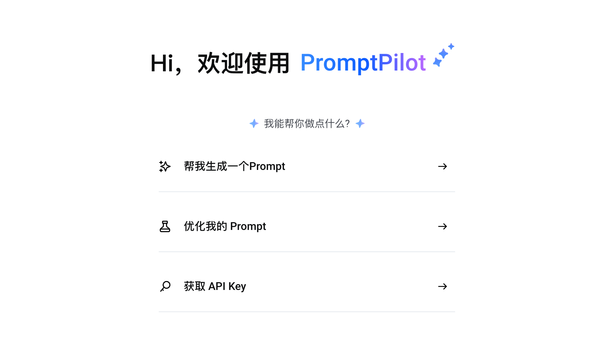
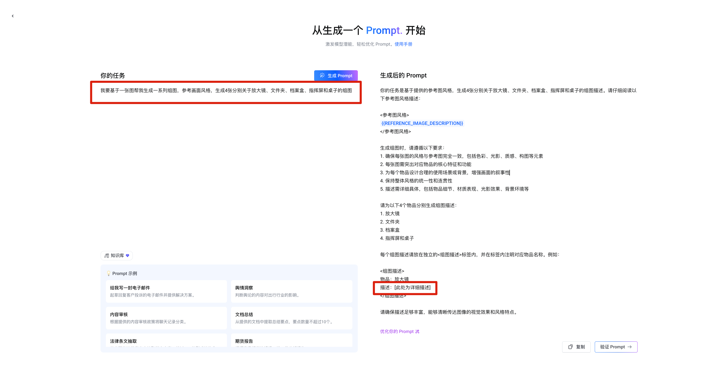
第五章
把“效果不像”拆成可控变量，不要笼统说“更像一点”
第五章
编辑指令：将图1的视角改为参考图2的视角
推荐词库： 2.5D视角、等距透视、平视视角、正面展示、轻微右转、主体居中
编辑指令：将图1的场景改为参考图2的场景
推荐词库： 深蓝纯色背景、极简背景、悬浮展示、科技场景、企业级界面
编辑指令：将图1的风格改为参考图2的风格
推荐词库： 玻璃拟态、B端科技感、3D UI图标、Apple风格、极简高级、企业级产品视觉
编辑指令：将图1的材质改为参考图2的材质
推荐词库： 半透明玻璃、亚克力、磨砂塑料、冰蓝描边、自然折射、柔和高光
编辑指令：将图1的光照改为参考图2的光照
推荐词库： 柔和冷光、顶部与左前方光源、轻微阴影、悬浮感、克制高光
编辑指令：将图1的色彩改为参考图2的色彩
推荐词库： 深蓝背景、亮蓝、冰蓝、青色、白色高光、冷色调、高饱和
编辑指令：将图1的构图改为参考图2的构图
推荐词库： 主体居中、小巧精致、占画面35%到45%、留白充足、比例统一
编辑指令：将图1的细节改为参考图2的细节
推荐词库： 圆角造型、边框细腻、结构轻薄、单一完整主体、无文字、无杂物
常见问题
| 问题 | 🤔️ 结果不理想，是否存在以下问题？ | ✅ 描述改进方式 |
|---|---|---|
| 指代不明 | 不要这个元素 | 去除背景里的放大镜 |
| 变化指向不明确 | 让它更好看 | 提高对比度，让背景更蓝，并锐化图像 |
| 缺少保持类描述 | 改成“V4.0” 描述简短时输出多样性强，但有概率改变样式 | 将“V3.0”替换为“V4.0”，同时保持字体样式与颜色不变 必要时指定保留 |
| 编辑对象不精确 | 将相框改为金属材质 画面如有多个相同主体时，难以定位具体对象 | 将图片右上角，背景上方的放大镜由木质改为金属材质 可添加编辑对象的位置信息和变化特征 |
第六章
第六章
• 参考图优先：开头写“严格参考上传图片的视觉风格”。
• 主体公式：主要对象、辅助对象、装饰元素，表达功能语义。
• 顺序优先：越靠前的提示词权重越高。
• 分行组织：按维度分行，结构更清晰。
• 风格固定：统一视角、材质、光照和色彩。
• 文字渲染：文字内容放入英文双引号中，如 "DATA"。
• 数值约束：使用具体范围，如占画面 35% 到 45%。
• 负面约束：明确写出禁止项，如无文字、无杂物。
• 权重控制：使用 (关键词:1.2) 强化重点，用 [关键词] 弱化内容。
• 同义叠加：多个近义词组合，提高稳定性。
• 单图更稳：一次生成 1 张比组图更容易复刻。
• 适度精简：避免过长，突出关键要求。
• 局部编辑：使用“将图 1 的材质改为参考图 2 的材质”类指令。
• 多次迭代：先验证风格，再批量生成。
第六章
第七章
第七章
其核心优势在于极强的语义理解力、逻辑能力、中文能力。
在 Image2/NB2 中，不需要频繁切换其他模型，可以直接上传图片，利用模型的视觉分析能力进行逆向。
逆向指令：
“请作为图像分析大师，深度解析这张图。请按照：核心主体、场景环境、构图视角、光照氛围、艺术风格、色彩搭配、文字图形、细节质感这 8 个维度进行解构，并最终合并为一段充满画面描述感的自然语言提示词。”
NB2 擅长理解长句，可以将公式转化为一个“叙事性段落”。对话式局部重绘，通过文字即可精准控制。
全局风格迁移： 上传图 A，输入：“保持图 A 的构图和主体，将其风格转变为{ }
局部元素替换： “把元素 A换成元素 B”
多图融合： “参考图 1 的动作，结合图 2 的色彩和光影氛围，生成一张全新的 {}。”
第七章
| 维度 | 即梦（Dreamina） | Image2 |
|---|---|---|
| 交互逻辑 | 工具导向，擅长局部重绘和参考图控制 | 对话导向，像与设计师沟通 |
| 提示词敏感度 | 偏关键词和权重语法 | 偏自然语言和完整语义 |
| 权重语法 | (关键词:1.2) 有效，[关键词] 可弱化 | 不敏感，主要依赖语义顺序 |
| 提示词结构 | 标签式、模块化效果更好 | 段落式、自然语言效果更好 |
| 局部编辑 | 精准修改材质、颜色和细节 | 更适合整体调整 |
| 最佳用法 | 固定模板 + 参考图 + 主体变量 | 对话迭代 + 风格描述 |
| 学习成本 | 较高，需要掌握控制技巧 | 较低，更接近自然沟通 |
第八章
在生产环境中，不建议长期停留在 Web Chat 模式，普通对话上下文有限，规则容易丢失；
原因：临时对话的上下文窗口有限，长期复用能力弱。
更推荐使用 Agent，把固定规则、负面提示词和工作流沉淀下来。
可将稳定可复用的提示词沉淀为 Skill，作为长期记忆，并持续优化触发词，提高出图效率与准确性。
创建 agent.md，用于存储一些系统信息、负面提示词和固定规则。
第九章
真正有复利的不是某一次出图，而是把可复用规则沉淀下来。
固定提示词模板
Skill 知识库
AGENTS.md
项目级规则
可持续沉淀的工作流经验
分析 → 生成 → 对比 → 优化 → 再生成
第十章
给 Agent 输入：一段标签规范和一张参考图。
标签宽度规范
当表单标签采用右对齐时，同一表单区域内的标签宽度应保持一致，避免因标签文字长度不同导致左侧起始位置参差不齐，影响表单整体对齐和阅读效率。
标签宽度可根据当前表单区域内最长标签确定，但应受统一上限约束：
标签宽度 = min(当前表单区域最长标签宽度, 120px)
规范要求：
- 同一页面、同一分组或同一表单区域内，标签宽度必须统一。
- 不同表单页面可根据字段长度采用不同标签宽度，但应保持在系统定义的宽度范围内。
- 标签最大宽度建议不超过 120px。
- 当标签内容超过最大宽度时，可采用省略号显示；必要时可通过悬浮提示展示完整内容。
- 不建议因个别超长标签扩大整个表单标签宽度，避免压缩输入区域或破坏页面布局。
推荐宽度档位：
72px / 96px / 120px
使用建议：
- 字段名称较短、结构简单的表单，可使用 80px。
- 常规业务表单，推荐使用 96px。
- 字段名称较长或政务、监管、档案类表单，可使用 120px。
- 超过 120px 的标签应进行文案精简或省略处理。 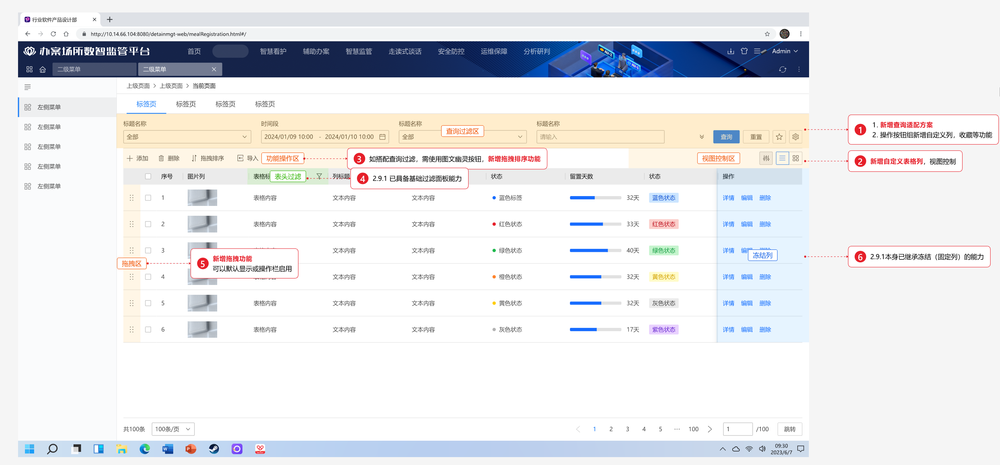
第十章
使用当前图片作为唯一参考图，严格复刻其版式、信息层级、配色和构图，生成一张超高清中文产品设计规范海报。重点修正：所有中文文字、数字、图标和表单示例必须保持原始宽高比，禁止任何横向或纵向拉伸，禁止字体被压扁或拉长，确保字形自然、标准、清晰可读。所有文本使用正常字宽（100% horizontal scale, 100% vertical scale），字符间距、行距、段落间距均保持均衡，避免字形变形。
【整体风格】
- 专业的企业级 UI/UX 设计规范海报
- 白色到浅灰色的干净背景，轻微渐变
- 大量留白，布局规整，对齐精准
- 中文排版清晰锐利，类似微软雅黑 / PingFang SC / Source Han Sans SC
- 所有字体均使用 Regular / Semibold / Bold 的正常字宽，不使用 Condensed、Expanded 或任何非标准缩放
- 4K 超清，矢量质感，印刷级清晰度
- 所有元素边缘锐利，无模糊，无锯齿
【关键排版要求（最重要）】
- 禁止文字横向拉伸（no horizontal stretch）
- 禁止文字纵向拉伸（no vertical stretch）
- 禁止整体内容比例失衡（no distorted aspect ratio）
- 保持字体宽高比 1:1（normal glyph proportions）
- 中文字形必须方正自然，不瘦长、不扁宽
- 数字与单位（72px、96px、120px）保持标准比例
- 标题、正文、标签、公式、注释全部使用正常字体比例
- 输出画布比例必须与参考图完全一致，不得改变纵横比
- 所有模块保持正确尺寸关系，不允许整体被纵向压缩或横向拉伸
【画布设置】
- Portrait vertical poster
- Aspect ratio exactly the same as the reference image
- Recommended resolution: 4096 × 6144 (2:3 portrait)
- Preserve all margins, paddings and section spacing exactly
【顶部标题区】
- 左上角火焰图标
- 主标题：表单标签宽度规范
- 黑色超粗体标题，字形正常不拉伸
- 下方两段说明文字，左对齐，正文大小适中，行距舒适
【公式说明卡片】
- 左侧火箭图标
- 圆角白色卡片，浅灰边框与阴影
- 公式：标签宽度 = min(当前表单区域最长标签宽度, 120px)
- 红色强调文字：同一页面、同一分组、同一表单区域内保持一致；最大宽度建议不超过 120px。
- 所有公式字符保持标准比例，不可压缩
【规范要求模块】
- 绿色勾选图标
- 标题：规范要求
- 红色圆点项目符号
- 五条规则说明，黑色正文，两行时保持自然换行
【推荐宽度档位】
- 图钉图标
- 橙色大号数字：72px / 96px / 120px
- 数字保持标准宽高比，避免细长
【使用建议模块】
- 绿色勾选图标
- 四条业务建议说明
- 与参考图一致的字号和间距
【右侧示例区】
1. 短标签表单：推荐标签宽度 72px
2. 常规业务表单：推荐标签宽度 96px
3. 长标签/政务监管类表单：推荐标签宽度 120px
4. 超长标签错误示例（红色叉号与红框）
- 绿色浅底虚线标签区域
- 橙色尺寸标注条
- 红色虚线箭头及说明文字
- 表单输入框、下拉框、按钮均保持标准企业 UI 风格
【底部说明区】
- 黄色警告图标：页面之间是否需要一致？
- 三张圆角信息卡片
- 中间卡片红色重点强调
- 右侧卡片展示固定宽度建议：
- 短标签表单：72px
- 常规表单：96px
- 长标签表单：120px
- 最大不超过：120px
【输出质量要求】
- Ultra sharp Chinese typography
- Correct font proportions
- No stretched or squashed text
- Perfect aspect ratio preservation
- Crisp vector-like lines
- Print-ready 4K infographic poster
- Clean enterprise design specification style
【负面约束】
- no stretched text
- no condensed fonts
- no expanded fonts
- no distorted Chinese characters
- no incorrect aspect ratio
- no blurry text
- no warped layout
- no compressed vertical spacing
- no elongated glyphs第十章
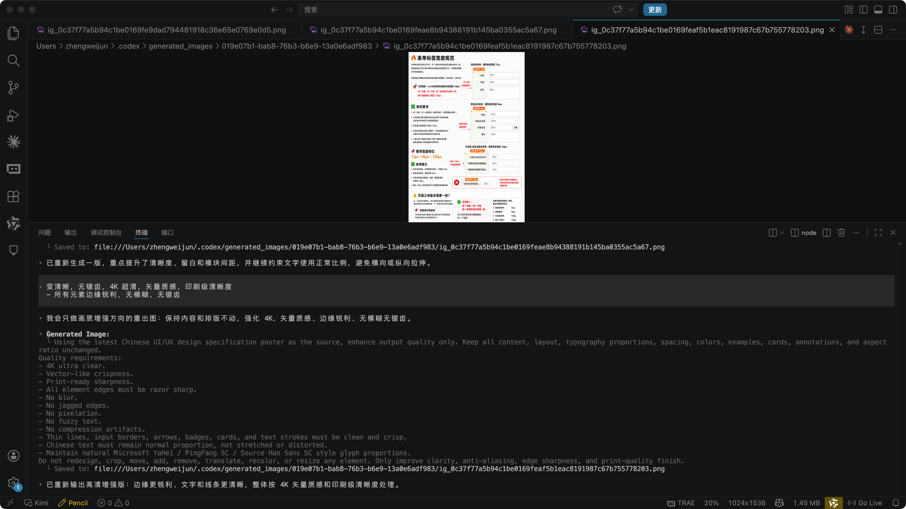
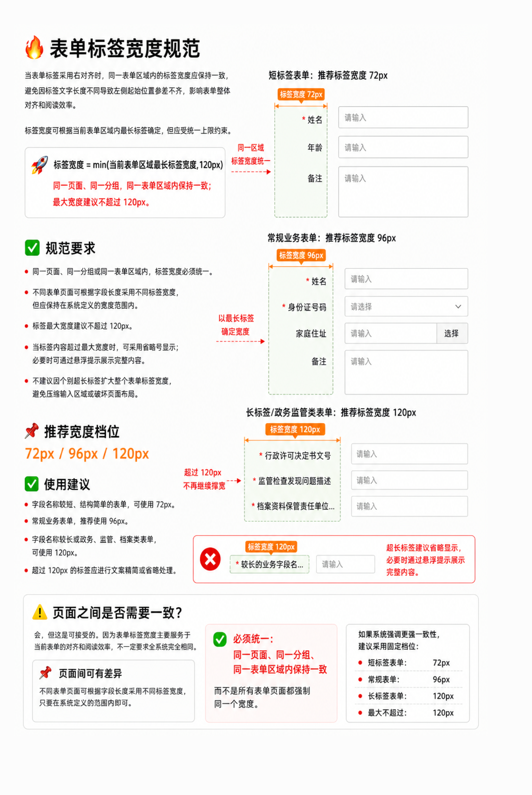
第十章
可将稳定可复用的提示词沉淀为 Skill，作为长期记忆，并持续优化触发词，提高出图效率与准确性。
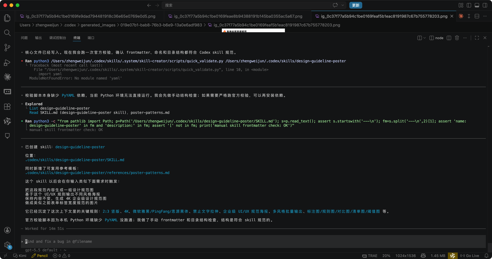
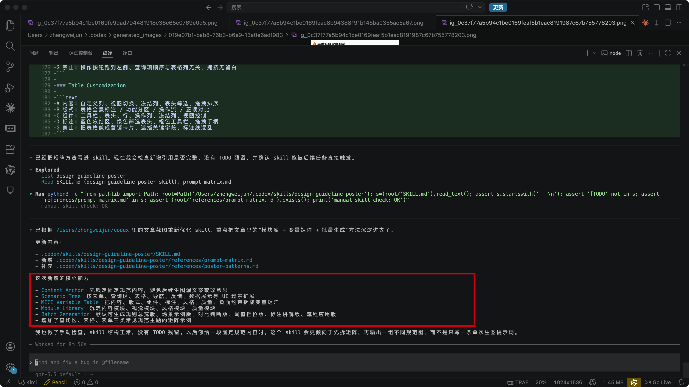
第十章
抽象出万能的“设计规范图通用提示词框架”，输入：
请基于这个文生图，生成设计规范的过程，抽象出设计规范图的关键点：要素（包含哪些要素）、结构（图片中如何表达）、覆盖和使用（不同的组件的特点）等等。这些关键点是我的总结和理解，请你发挥你的能力进行深度研究思考。基于抽象出来的关键点，来给我一套生成设计规范制图的提示词，这样我给像你一样的大模型一篇规范初稿加上这个提示词的时候，你就能够生成对应的设计规范图。输出
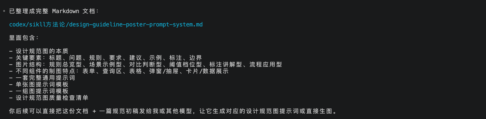
第十章
## 六、单张图生成提示词模板
如果你只想生成一张图，用这个版本：
```text
请把以下规范初稿转化为一张企业级 UI/UX 设计规范海报。
要求：
- 保留规范初稿的核心含义和关键文案。
- 提炼标题、问题说明、核心规则、规范要求、使用建议、边界条件。
- 用真实感 UI 组件示例表达规则落点。
- 用箭头、编号、色块、测量线、对比标签进行标注。
- 画面结构清晰，阅读顺序明确。
图片结构：
顶部：大标题 + 一句话问题说明。
中部：核心规则 / 公式卡片 + UI 示例。
右侧或下方：规范要求和使用建议。
底部：边界说明或推荐/不推荐对比。
视觉风格：
专业企业级 UI/UX 设计规范图，白色到浅灰色背景，大量留白，精准对齐，细边框，轻阴影，红色重点，橙色数值，浅绿色/浅蓝色区域标注。
质量要求：
4K 超清，矢量质感，印刷级清晰度，中文字体类似微软雅黑 / PingFang SC / Source Han Sans SC，字体比例正常，不横向拉伸，不纵向拉伸，无模糊，无锯齿。
负面约束：
不要漏文案，不要改规则含义，不要把标注画错对象，不要添加多余分割线，不要让文字变形，不要让画面拥挤。
规范初稿：
[粘贴内容]
```第十章
form-label-width.md
query-area-breakpoints.md
table-column-config.md
modal-layout.md
upload-component.md
...
“图库化、模块化、矩阵化、CLI/工具化、可迭代”设计。
第十章
# 设计规范图生成方法论与通用提示词
> 用途：当你有一篇设计规范初稿时，把这份方法论和提示词一起发给大模型，让它把文字规范转化为一张或一组设计规范图。
## 一、设计规范图的本质
设计规范图不是“把文字排成海报”，而是把一条规则转化为可被快速理解、复用和执行的视觉说明。
一张合格的设计规范图需要同时解决四个问题：
```text
1. 这条规范解决什么问题？
2. 正确规则是什么？
3. 规则在界面里具体落在哪里？
4. 什么情况下适用，什么情况下不适用？
```
因此，设计规范图应该同时具备：
- 规则性：表达明确的设计约束。
- 场景性：展示规则适用的真实 UI 场景。
- 可视化：用框、线、箭头、示例、对比降低理解成本。
- 可执行：设计师、研发、评审人员看完后能直接按规则落地。
## 二、设计规范图的关键要素
### 1. 标题要素
标题负责让读者立即知道这张图讲什么。
推荐结构：
```text
规范对象 + 规则动作 + 约束目标
```
示例：
```text
表单标签宽度规范
查询项默认数量与响应式断点规则
表格操作列冻结与视图控制规范
上传组件图片展示与操作规范
```
标题不宜写成抽象口号，而应该明确指向组件和规则。
### 2. 问题说明
问题说明回答“为什么需要这条规范”。
它通常包含：
- 当前设计中存在的问题。
- 问题导致的体验影响。
- 不规范实现可能带来的协作成本。
推荐句式：
```text
当 [组件/场景] 出现 [不一致/拥挤/错位/信息不清] 时，会导致 [视觉问题/阅读效率下降/操作成本增加]。
```
### 3. 核心规则
核心规则是整张图的中心，必须突出显示。
常见表达方式：
- 公式卡片
- 规则卡片
- 判断条件
- 推荐值
- 最大值 / 最小值
- 优先级顺序
示例：
```text
标签宽度 = min(当前表单区域最长标签宽度, 120px)
查询项默认展示数量 = min(页面可容纳数量, 5)
操作列固定在右侧，宽度根据操作数量控制在 120px - 180px
```
### 4. 规范要求
规范要求是必须遵守的条目，适合用 checklist 表达。
要求内容通常包括：
- 必须统一的内容。
- 必须限制的范围。
- 必须保留的交互。
- 必须避免的异常状态。
- 必须与其他模块保持一致的规则。
### 5. 使用建议
使用建议不是强制规则，而是帮助设计落地的推荐方式。
常见内容：
- 不同场景下的推荐值。
- 不同复杂度下的处理方式。
- 默认方案与例外方案。
- 设计师和研发协作时的判断依据。
### 6. 视觉示例
视觉示例是设计规范图的核心价值。没有示例的规范图只是文档排版。
示例应尽量贴近真实业务界面：
- 表单：标签、输入框、选择器、按钮、上传、文本域。
- 查询区：筛选项、日期范围、查询/重置按钮、展开收起。
- 表格：表头、列、行、操作列、冻结区、视图控制。
- 弹窗：标题、内容区、操作区、关闭按钮。
- 卡片：标题、数据、状态、操作入口。
### 7. 标注系统
标注负责把规则和界面局部建立关联。
常用标注元素：
- 红色标题：强调问题或规则。
- 编号圆点：建立阅读顺序。
- 虚线箭头：指向对应 UI 区域。
- 测量线：表达宽度、高度、间距、数量。
- 半透明色块：标记区域范围。
- 正误标签：区分推荐与不推荐。
标注必须指向真实对象，不能指向空白或错误区域。
### 8. 边界和例外
好的规范图必须说明边界，否则容易被误用。
常见边界：
- 最大值和最小值。
- 不同页面是否允许差异。
- 超长内容如何处理。
- 响应式下是否沿用桌面端规则。
- 特殊业务场景是否可以例外。
## 三、设计规范图的结构表达
### 结构 1：规则总览型
适合：一条新规范首次说明。
结构：
```text
标题
问题说明
核心规则 / 公式
规范要求
使用建议
视觉示例
边界说明
```
特点：
- 信息完整。
- 适合放进设计规范文档。
- 适合作为团队统一认知的主图。
### 结构 2：场景示例型
适合：规则必须依赖 UI 场景理解。
结构：
```text
标题
一句话规则
大面积 UI 示例
局部标注
关键说明
```
特点：
- UI 示例占比更高。
- 适合解释“规则落在哪里”。
- 适合表单、表格、查询区等复杂组件。
### 结构 3：对比判断型
适合：容易被误解的规则。
结构：
```text
标题
问题说明
不推荐示例
推荐示例
判断原则
边界条件
```
特点：
- 左右对比直观。
- 适合说明“可以不同”和“必须统一”的差异。
- 适合设计评审和研发对齐。
### 结构 4：阈值档位型
适合：包含数字、断点、档位的规范。
结构：
```text
标题
核心公式
数值档位
每个档位的示例
最大/最小边界
使用建议
```
特点：
- 数字是视觉中心。
- 适合标签宽度、查询项数量、表格列宽、间距、字号、断点等规范。
### 结构 5：标注讲解型
适合：基于已有界面截图或复杂组件说明。
结构：
```text
标题
UI 截图 / 组件 mockup
编号标注
说明卡片
重点区域高亮
```
特点：
- 信息附着在界面上。
- 适合改版说明、组件能力说明、复杂后台系统说明。
### 结构 6：流程应用型
适合：规则需要按步骤判断。
结构：
```text
01 问题识别
02 判断条件
03 应用规则
04 示例展示
05 边界处理
```
特点：
- 适合解释设计决策流程。
- 适合复杂规则、响应式规则、组件状态规则。
## 四、不同组件的制图特点
### 1. 表单类规范
重点表达：
- 标签宽度
- 标签对齐
- 输入框宽度
- 必填状态
- 校验状态
- 分组标题
- 长字段处理
- 上传区域
图中建议：
- 使用真实表单行。
- 标签右对齐时要明确标签列范围。
- 输入框只保留边框，避免多余分割线。
- 用测量线说明标签宽度、字段宽度、间距。
- 用省略号示例说明超长标签处理。
常见错误：
- 把间距标注成标签宽度。
- 为了美观添加真实系统中不存在的分割线。
- 标签、输入框、按钮比例失真。
### 2. 查询区规范
重点表达：
- 默认展示几个查询项。
- 超出数量是否收起。
- 查询/重置按钮位置。
- 展开收起入口。
- 响应式断点。
- 查询项顺序是否与表格列一致。
图中建议：
- 用不同宽度的查询栏展示断点。
- 用数字标注默认展示数量。
- 把操作按钮固定在右侧区域。
- 用折叠区说明更多条件。
常见错误：
- 只画输入框，不说明按钮区。
- 查询项顺序和业务读取顺序不一致。
- 响应式变化没有明确断点。
### 3. 表格类规范
重点表达：
- 表头
- 表格列
- 操作列
- 冻结列
- 表头筛选
- 自定义列
- 视图切换
- 拖拽排序
图中建议：
- 保持企业后台表格真实感。
- 冻结列可用半透明蓝色区域标记。
- 表头筛选可用浅绿色标记。
- 工具栏可用橙色标注。
- 操作列应固定在右侧并明确边界。
常见错误：
- 把表格画成营销卡片。
- 标注遮挡关键字段。
- 操作列、冻结列、工具栏混在一起。
### 4. 弹窗 / 抽屉类规范
重点表达：
- 标题区
- 内容区
- 操作区
- 关闭入口
- 宽度规则
- 滚动规则
- 主次按钮
图中建议：
- 明确分区。
- 底部按钮区要稳定。
- 复杂内容要说明滚动区域。
- 用对比说明“弹窗”和“抽屉”的适用差异。
### 5. 卡片 / 数据展示类规范
重点表达：
- 信息层级
- 标题
- 主数据
- 辅助数据
- 状态
- 操作入口
图中建议：
- 用层级标注说明主次信息。
- 避免装饰过度。
- 数字、单位、状态标签要清晰。
## 五、设计规范图生成提示词总模板
下面这段可以直接发给大模型。把最后的「规范初稿」替换成你的内容即可。
```text
你是一名资深企业级 UI/UX 设计规范专家和信息图设计师。
请基于我提供的【规范初稿】，生成一张或一组「设计规范图」的完整文生图提示词。如果你具备生图能力，也可以直接按提示词生成图片。
你的任务不是简单排版文字，而是把规范初稿转化为可视化、可执行、可复用的设计规范图。
请先进行抽象分析：
1. 提炼内容锚点
- 规范主题
- 适用组件
- 适用场景
- 要解决的问题
- 核心规则
- 公式 / 阈值 / 推荐值
- 必须保留的文案
- 必须可视化的对象
- 禁止出现的错误表达
2. 拆解设计规范图要素
- 标题
- 问题说明
- 核心规则
- 规范要求
- 使用建议
- 视觉示例
- 标注系统
- 边界和例外
3. 判断适合的图片结构
请从以下结构中选择 1 到 4 种：
- 规则总览型
- 场景示例型
- 对比判断型
- 阈值档位型
- 标注讲解型
- 流程应用型
- 反例对照型
4. 根据组件类型设计可视化方式
如果是表单：重点表现标签、输入框、选择器、按钮、文本域、必填、校验、分组。
如果是查询区：重点表现查询项、日期范围、按钮区、展开收起、响应式断点。
如果是表格：重点表现表头、行、列、操作列、冻结列、筛选、自定义列、视图控制。
如果是弹窗/抽屉：重点表现标题区、内容区、操作区、关闭入口、滚动区域。
如果是卡片/数据展示：重点表现标题、主数据、辅助数据、状态、操作入口。
5. 生成图片提示词
每张图都必须包含：
- 明确标题
- 简短问题说明
- 核心规则或公式
- 规范要求
- 使用建议或边界说明
- 真实感 UI 示例
- 清晰标注
整体视觉风格：
- 专业企业级 UI/UX 设计规范海报
- 白色到浅灰色干净背景
- 大量留白
- 精准网格对齐
- 清晰的信息层级
- 红色用于重点和风险
- 橙色用于数值、档位、建议
- 浅绿色或浅蓝色用于区域标注
- 细边框、轻阴影、矢量质感
- 不要营销风、不要过度装饰
字体与清晰度要求：
- 中文字体类似 微软雅黑 / PingFang SC / Source Han Sans SC
- 使用 Regular / Semibold / Bold 正常字宽
- 禁止文字横向拉伸
- 禁止文字纵向拉伸
- 禁止中文变瘦长或扁宽
- 数字和单位保持正常比例
- 4K 超清
- 印刷级清晰度
- 所有元素边缘锐利
- 无模糊
- 无锯齿
负面约束：
- 不得遗漏规范初稿中的关键规则
- 不得改变规范含义
- 不得把标注指向错误对象
- 不得把间距、宽度、区域等概念画错
- 不得添加与规范无关的装饰元素
- 不得让文字拥挤或遮挡 UI 示例
- 不得出现错误中文、乱码或不可读小字
输出方式：
请先输出「内容锚点分析」。
再输出「推荐制图结构」。
最后输出 3 到 6 条完整文生图提示词，每条提示词对应一张独立设计规范图。
【规范初稿】
[在这里粘贴规范内容]
```
## 六、单张图生成提示词模板
如果你只想生成一张图，用这个版本：
```text
请把以下规范初稿转化为一张企业级 UI/UX 设计规范海报。
要求：
- 保留规范初稿的核心含义和关键文案。
- 提炼标题、问题说明、核心规则、规范要求、使用建议、边界条件。
- 用真实感 UI 组件示例表达规则落点。
- 用箭头、编号、色块、测量线、对比标签进行标注。
- 画面结构清晰，阅读顺序明确。
图片结构：
顶部：大标题 + 一句话问题说明。
中部：核心规则 / 公式卡片 + UI 示例。
右侧或下方：规范要求和使用建议。
底部：边界说明或推荐/不推荐对比。
视觉风格：
专业企业级 UI/UX 设计规范图，白色到浅灰色背景，大量留白，精准对齐，细边框，轻阴影，红色重点，橙色数值，浅绿色/浅蓝色区域标注。
质量要求：
4K 超清，矢量质感，印刷级清晰度，中文字体类似微软雅黑 / PingFang SC / Source Han Sans SC，字体比例正常，不横向拉伸，不纵向拉伸，无模糊，无锯齿。
负面约束：
不要漏文案，不要改规则含义，不要把标注画错对象，不要添加多余分割线，不要让文字变形，不要让画面拥挤。
规范初稿：
[粘贴内容]
```
## 七、一组图生成提示词模板
如果你要批量生成不同角度的规范图，用这个版本：
```text
请基于以下规范初稿，生成一组 4 张不同结构的企业级 UI/UX 设计规范图提示词。
第 1 张：规则总览版
- 重点表达问题、核心规则、公式、规范要求。
第 2 张：场景示例版
- 重点表达规则在真实 UI 组件中的落点。
第 3 张：对比判断版
- 重点表达推荐与不推荐、可接受与必须统一、正确与错误。
第 4 张：阈值 / 档位版
- 重点表达数字、断点、推荐档位、最大值或最小值。
每张图都必须：
- 保持规范内容不变。
- 是独立完整海报。
- 包含标题、规则、示例、标注、说明。
- 使用企业级 UI/UX 规范图风格。
- 中文字体比例正常，4K 超清，无文字拉伸，无锯齿。
规范初稿：
[粘贴内容]
```
## 八、评估一张设计规范图是否合格
可以用下面的 checklist 检查：
```text
内容是否完整？
- 是否包含问题、规则、要求、建议、边界？
- 是否保留了关键数字和公式？
- 是否遗漏了例外情况？
结构是否清楚？
- 是否有明确阅读顺序？
- 是否把重点放在视觉中心？
- 文案和示例是否互相支撑？
可视化是否准确？
- 标注是否指向正确对象？
- 测量线是否测量正确概念？
- UI 示例是否符合真实组件逻辑？
组件特点是否覆盖？
- 表单是否体现标签、输入框、选择器、校验？
- 表格是否体现列、表头、操作、冻结、筛选？
- 查询区是否体现默认项、按钮区、展开收起、断点？
质量是否达标？
- 中文是否清晰？
- 字体是否变形？
- 是否有模糊、锯齿、乱码？
- 留白是否足够？
- 是否过度装饰？
```第十章
输入一个表格图和规范，实际执行，根据输出品质调整skill等文件，越用越精准
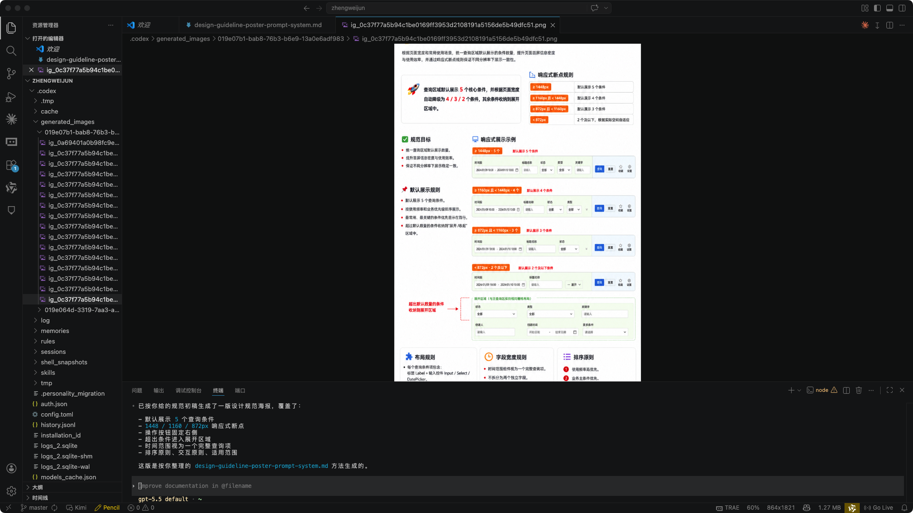
第十一章
第十一章
偶尔生成一张图；
需求简单；
不需要保存一套固定工作流；
缺点是：
每次都要重新说明规则；
容易漏掉固定质量约束；
多图批量时风格不稳定；
不方便长期沉淀 prompt 模板；
对图生图、多参考图、mask 编辑、批量生成等流程支持不够系统。
第十一章
不用每次都说：
4K、高清、无锯齿、不要拉伸、参考图、保持主体、输出到文件……
skill 会把这些流程和约束固化下来。
多图批量更稳定
比如你以后说：
基于这段规范，生成 4 张不同风格设计规范图
skill 可以按固定模式拆：
规则总览版
场景示例版
对比说明版
第十二章
主要在这些场景：
基于参考图改风格；
有 prompt gallery 可复用
多张参考图组合；
批量生成多版本
...
GPT Image2Skill 本质上是一套面向 Agent 的图像生成工作流工具包：
-一个可安装到 Claude Code/Codex/OpenClaw/Hermes Agent 等环境里的 agent skill；
-一个 gpt-image CLI 命令行工具；
-一个包含大量示例的 prompt gallery；
-一套围绕 OpenAI gpt-image-2的文生图、图生图、编辑、参考图组合、遮罩重绘工作流。
它的核心价值不是“单次生图”，而是把图像生成变成可复用、可检索、可执行、可批量化的流程。
Prompt Gallery 示例库
项目内置大量示例，GitHub 页面提到有162prompts/162image assets。这些示例不是简单 prompt 堆积，而是按类别组织，方便 agent 查找和复用。
覆盖类别包括：
-Anime&Manga
-Gaming
-Retro&Cyberpunk
-Cinematic&Animation
-Character Design
-Typography&Posters
-Illustration
-Watercolor
-Scientific&Educational
-Fashion Editorial
-Fine Art Painting
-Photography
-Beauty&Lifestyle
-Events&Experience
-Tattoo Design
-Architecture&Interior
-UI/UX Mockups
-Research Paper Figures
在 Agent 中，它的理想工作方式是：
1.用户提出生图需求；
2.Agent 判断是否需要用这个 skill；
3.Agent 查找 gallery 或 craft reference；
4.Agent 选择合适的 prompt 模板；
5.Agent 调用 gpt-image CLI；
6.保存图片到指定路径；
7.根据用户反馈继续编辑。
2.每个规范主题都包含：输入、结构、视觉模块、负面约束、示例 prompt
3.把复杂任务拆成 reference
例如：
references/
poster-patterns.md
prompt-matrix.md
component-form.md
component-table.md
component-query-area.md
typography-quality.md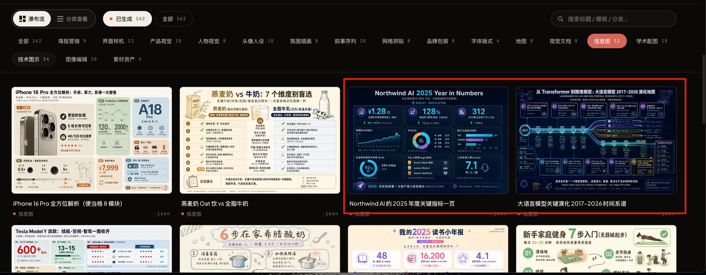
收束
一句话总结：高质量AI生图工作流 = 明确参考 + 结构化 Prompt + 对比迭代 + 工具沉淀。
对于个人，重点是建立稳定的 Prompt 写法；
对于团队，重点是把成功案例沉淀为 Skill、模板和项目规则，让经验可以复用、批量化和持续优化。
建议：“分析 → 生成 → 对比 → 优化 → 沉淀”的闭环，可以先从一个工作的高频场景开始实践。
尾页
https://my.feishu.cn/docx/AK9ndGPm0oRp6gxABSwcmh2AnXf?from=from_copylink
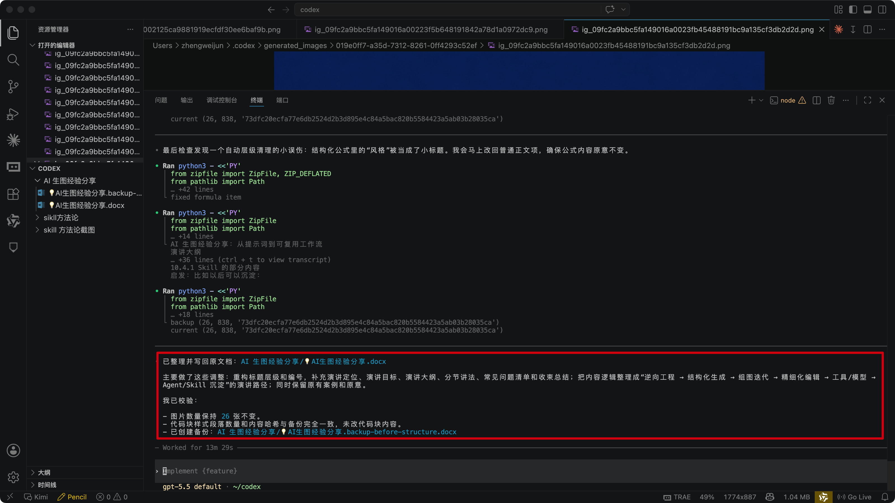
尾页
我要把这个文档用这个 Skill 生成 PPT ，你帮我整理完整的中文提示词，以 markdown 代码框格式输出。 以下是我的初步要求，你要考虑进去并优化成提示词 #要求 页数帮我计算，每页信息密度不能太高，按现有文档的逻辑来，逻辑不能变化太大 希望保留的内容：文字内容在保留原意的基础上允许优化，代码块内容显示不下可以用生图工具或者其他区块的方式呈现，图片内容全部保留 主题：AI生图经验分享-从提示词到可复用工作流 希望弱化的内容：代码块内容弱化，但不能删除，尽量展现全部内容 用 gpt-image2-ppt 生成一份关于「AI生图经验分享-从提示词到可复用工作流」的 PPT，风格用 gradient-glass。
请使用 html-ppt-skill，根据我上传的 Word 文档生成一份静态 HTML 演示文稿。
# 最高优先级要求
1. 输出形式为 HTML Presentation，不生成传统 PPTX。
2. 必须严格使用主题 `minimal-white`。
3. 直接生成完整 HTML 演示文稿，不需要输出 slides_plan，不需要等待我确认。
4. 严格按原文档内容顺序生成页面，不允许调整章节顺序和内容先后关系。
5. 所有文本内容必须与原文完全一致，不允许修改、改写、精简、润色或重组。
6. 仅允许根据页面容量进行分页拆分，不得改变任何文字表述。
7. 一个页面不允许同时出现两个不同章节的内容，除非我明确要求合并。
8. 页面大标题和内容标题不允许重复，若重复，只保留一个页面大标题。
9. 所有标题、正文、列表、表格必须使用 HTML 原生文本，不允许渲染为图片。
10. 原文中的加粗内容原则上保持加粗，但以下内容不加粗：
- 第五章局部控制内容中的“编辑指令：”
- 第五章局部控制内容中的“推荐词库：”
- 第七章精细化编辑内容中的“对话式局部重绘：”
- 第七章精细化编辑内容中的“全局风格迁移：”
- 第七章精细化编辑内容中的“局部元素替换：”
- 第七章精细化编辑内容中的“多图融合：”
11. 所有页面内容整体保持垂直居中，不允许内容贴近页面左上角。
12. 正文字号在主题默认基础上整体加大 10%。
# 指定合并与排版要求
1. “演讲定位”和“演讲目标”必须整合在同一页展示。
2. “AI提示词反推模板”必须移动并合并到上一页中展示，不单独成页。
3. 以下内容必须完整合并在同一页，不允许拆分：
- 二、只有模糊想法时：用结构化公式补全画面
- 结构化公式的价值，帮助模型稳定补齐画面信息。
- 2.1 结构化公式：先定维度，再补细节
- 核心公式：每次描述图片时，至少覆盖以下 9 个维度。
- 1. 核心主体
- 2. 场景设定
- 3. 构图视角
- 4. 光照氛围
- 5. 风格
- 6. 色彩色调
- 7. 文字与图形
- 8. 细节与材质
- 9. 图片比例
- 使用方式：把结构化公式和模糊创意合并，让模型补齐缺失细节。
4. 上述结构化公式页可适当缩小字号，优先使用两栏或紧凑卡片布局，但不得修改任何文字。
5. 第五章“局部控制”部分的 5.1 到 5.8 内容必须整合在同一页展示，字号可适当缩小，使用紧凑表格或多列卡片布局。
6. 首页标题和每个章节第一页的标题必须单行展示，不允许自动换行；必要时可略微缩小标题字号或调整字间距，但不能改变文字。
7. 收束页若出现“演讲收束：把 AI 生图当成可复用流程，而不是一次次性碰运气”和“END：把 AI 生图当成可复用流程，而不是一次次性碰运气”重复标题，只保留一个标题，优先保留“END：把 AI 生图当成可复用流程，而不是一次次性碰运气”。
# 代码块处理要求
1. 所有代码块必须使用原生 `<pre><code>` 展示，保持可复制。
2. 代码块采用类似飞书文档的代码块样式：浅灰色背景、圆角卡片、等宽字体、适当内边距。
3. 每个代码块顶部必须加入小标题名称。
4. 代码块必须严格跟随其上方对应的正文内容，紧贴相关段落之后展示，确保阅读顺序连续。
5. 代码块必须出现在与对应文本相同页面中；如当前页面空间不足，应优先将“正文 + 代码块”整体移动到下一页，而不是将代码块单独拆到后续页面。
6. 不允许将代码块移动到其他章节、页面末尾或集中展示区域。
7. 所有代码框中的提示词必须按照原文代码块格式换行显示，完整保留原来的换行、缩进、空行、编号、符号和段落结构。
8. 禁止把代码块内容压缩成一行，禁止自动合并换行，禁止重新排版代码块文本。
9. 代码块样式必须设置 `white-space: pre-wrap` 或等效规则，确保原始换行可见。
10. 代码块最小高度自适应内容，最大高度不得超过页面高度的 1/3。
11. 超出最大高度时使用滚动容器，不得挤压正文，不得删除内容。
# 图片处理要求
1. 所有图片必须使用原始图片资源嵌入，不允许 AI 重绘或替代。
2. 图片必须跟随原文对应内容位置展示，不允许改变顺序。
3. 所有页面中的图片统一靠左对齐，图片左边缘必须与正文左边缘或主内容区左边缘对齐。
4. 图片不加边框，不加额外背景卡片。
5. 全部页面的图片不加圆角，圆角半径必须为 0。
6. 图片在图片容器中横向撑满容器宽度，保持正确宽高比例。
7. 图片高度在上一版基础上加高约 50%，优先保证阅读尺寸。
8. 图片显示不完整可以接受，但必须保持正确比例，不允许拉伸、压扁或变形。
9. 图片允许根据内容调节容器宽度和高度，不强求完整显示关键信息，因为可单击放大查看。
10. 优先使用“上文下图”排版：正文内容在上方，图片位于下方，且图片靠左对齐。
11. 当下方空间不够时，再使用“左文右图”排版，但图片仍需在其所在容器内靠左对齐。
12. 当一页存在两张图片时，可放在页面下方横向排列，两张图整体靠左，并与正文左边缘对齐。
13. 所有图片必须支持交互查看：单击图片可进入全屏预览。
14. 全屏预览中必须支持滚轮放大和缩小，支持拖拽查看局部，支持点击空白处或 Esc 退出全屏。
# 页面与排版要求
- 严格按照原文档章节顺序组织页面。
- 每页信息密度可以适当提高，但必须保持清晰可读。
- 页面内容整体垂直居中，保持视觉重心稳定。
- 标题层级必须清楚区分：章节标题、原标题、二级标题、正文、列表、代码块、表格。
- 第八、九、十等章节不要出现重复标题。
- 收束页、章节页、案例页均不得出现两个含义重复的页面标题。
- 长段文字可拆分到多页，但文字本身不得改动。
- 表格使用 HTML 原生表格展示。
- 代码块、图片、表格必须出现在原文对应内容附近。
- 不允许为了版式美观删减原文内容。
- 优先使用“上文下图”的自然阅读布局，下方空间不足时再使用“左文右图”。
- 排版允许根据内容结构自由使用单栏、双栏、上下分区、左下图片区等布局。
# 视觉风格要求
- 严格使用 `minimal-white` 主题。
- 整体风格现代、专业、极简，适合技术分享。
- 白色背景，合理留白，排版清晰。
- 标题层级明确，正文阅读舒适。
- 正文字号比主题默认值增大约 10%。
- 可使用卡片、分栏、流程图、时间线、对比表、代码窗口等布局。
- 强调信息结构与可读性，不使用多余装饰。
# 最终输出要求
生成完整 HTML 演示文稿文件，并确保：
- 可用浏览器直接打开
- 支持键盘翻页
- 所有文字可复制
- 代码块可复制
- 代码块严格跟随对应正文内容
- 代码块保留原始换行、缩进和空行
- 代码块中的提示词按原文格式换行显示
- 图片清晰，正确比例，不变形
- 全部图片靠左对齐
- 全部图片无圆角
- 图片高度比上一版加高约 50%
- 图片横向撑满容器
- 图片可单击全屏查看
- 图片全屏后支持滚轮缩放和拖拽查看
- 页面内容整体垂直居中
- 首页及章节第一页标题不换行
- 页面样式统一
- 标题层级清晰
- 不出现重复页面标题
- 代码块和图片位置严格贴合原文逻辑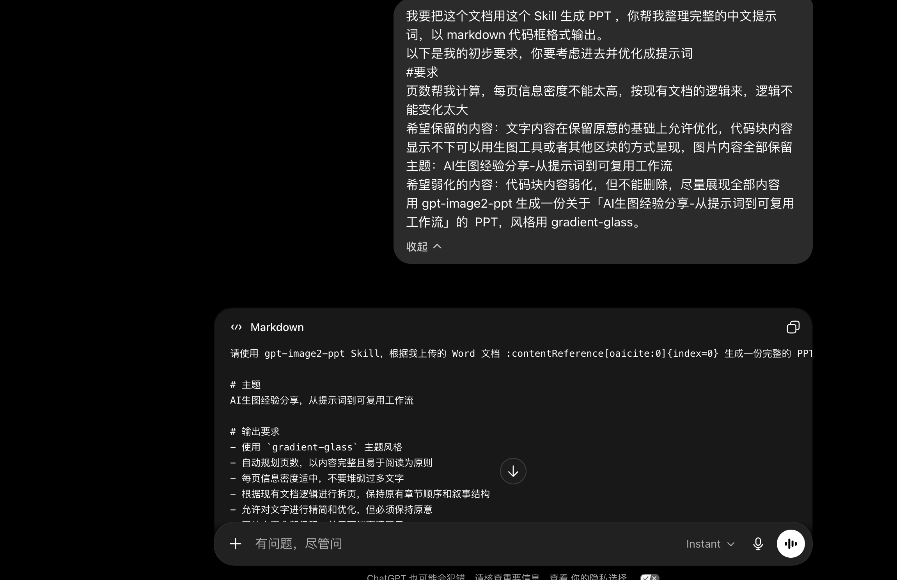